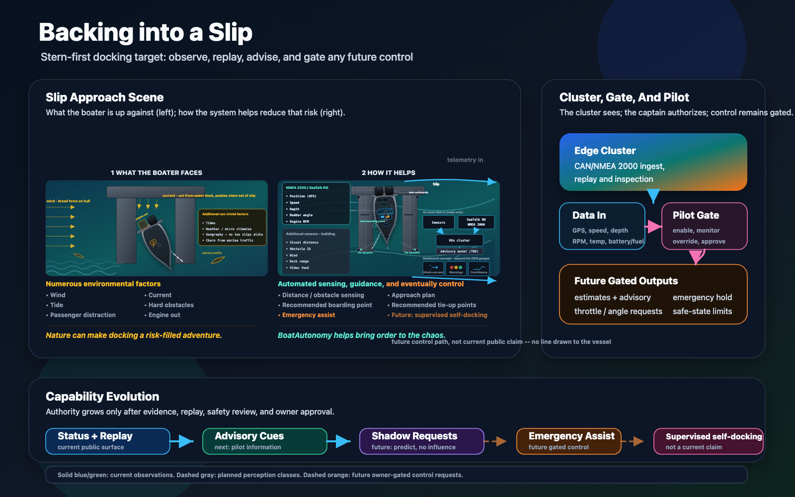
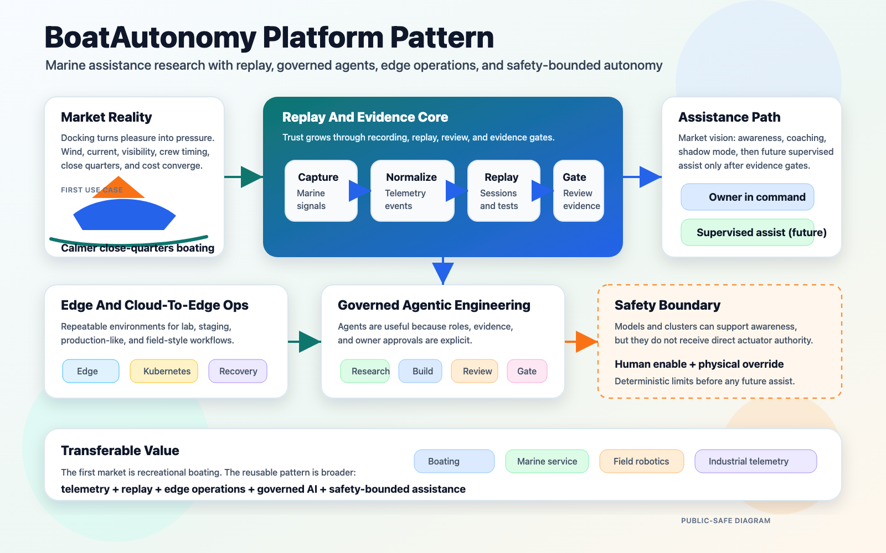
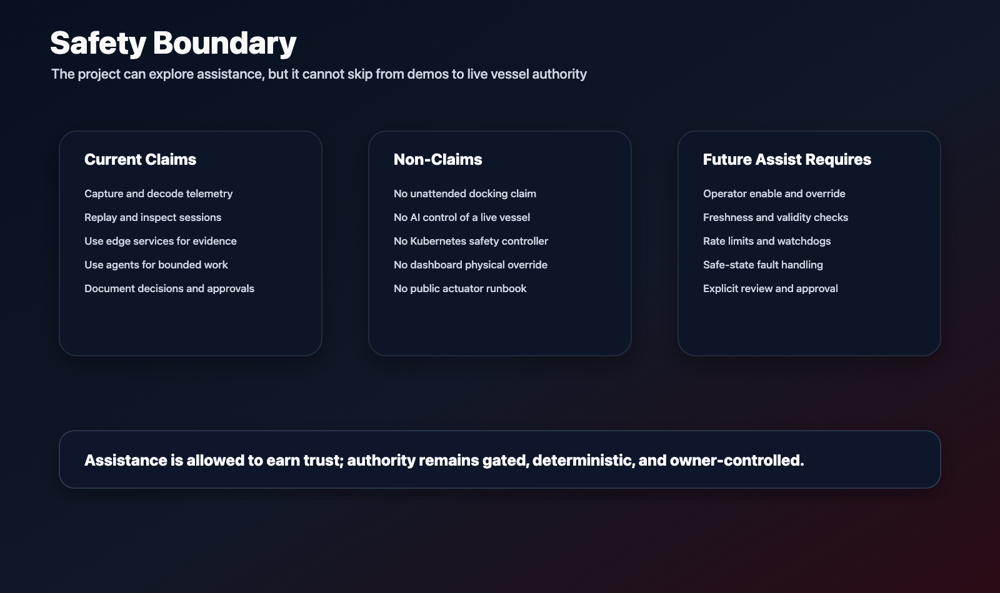

Demonstrated
Bounded passive survey captures
Real-vessel NMEA 2000 and NMEA 0183-class observations have been captured without bus writes.
Marine autonomy · Edge systems · Governed AI engineering
BoatAutonomy is a public-safe view into a private, owner-built lab developing the telemetry, replay, edge-compute, safety, and review foundation required before supervised docking assistance can be responsibly tested.

The engineering thesis
Docking is a compact but unforgiving physical-systems problem: wind, current, visibility, crew coordination, noisy sensors, intermittent connectivity, and expensive consequences meet at low speed and close range.
The project responds with a staged method. Capture bounded passive marine-network observations. Inspect and replay selected recordings. Build repeatable edge operations and an auditable evidence trail. Advance toward estimation, shadow mode, and assistance only when the preceding stage has earned it.
A platform, not a demo script
Marine telemetry, replay-oriented inspection, Kubernetes edge operations, multi-agent engineering, and explicit safety policy form one reviewable system. Kubernetes and models support observation and supervisory workflows; they are not the helm or the hard real-time safety controller.
Explore the system platform
Current evidence boundary
Infrastructure activity is not presented as autonomy progress.
Demonstrated
Real-vessel NMEA 2000 and NMEA 0183-class observations have been captured without bus writes.
Demonstrated
Selected telemetry has flowed through Signal K, InfluxDB, and Grafana-style inspection paths.
Demonstrated
Implementation, independent review, research, evidence, and owner approval remain separate roles.
Still a milestone
Schema-valid identity, manifests, checksums, ordered equivalence, and failure injection are not yet claimed complete.
Not started
No public claim of vessel-state estimation or assistive logic running beside live control.
Not claimed
No unattended docking, direct model authority, or Kubernetes role in the hard real-time control path.
Capability order

The non-negotiable boundary
Future assistance must be bounded by deterministic control, operator enablement, freshness and validity checks, safe-state behavior, and immediate physical override. Model output is advice to a bounded system—not a command to the vessel.
Read the safety boundaryContact
BoatAutonomy is a public technical and credibility surface for an owner-built applied-autonomy lab.